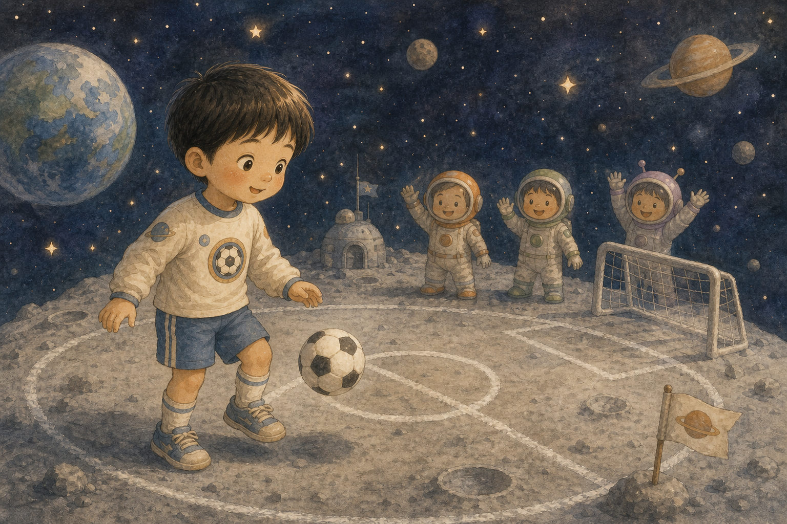
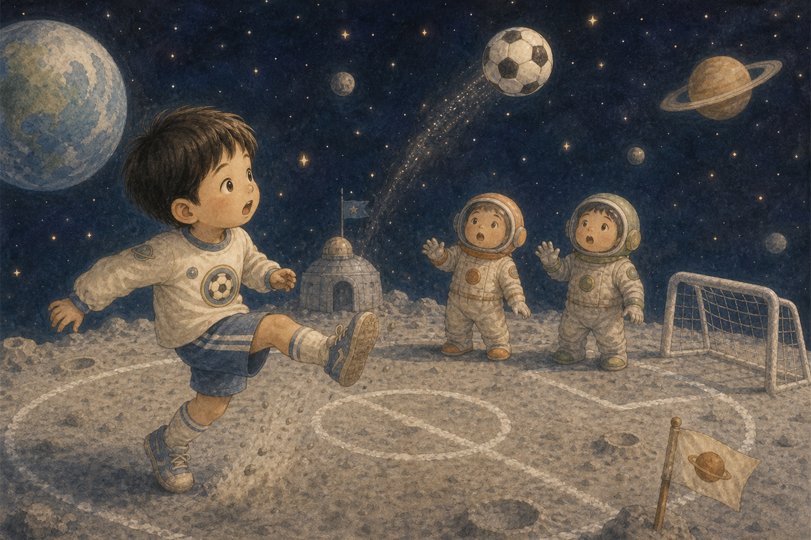
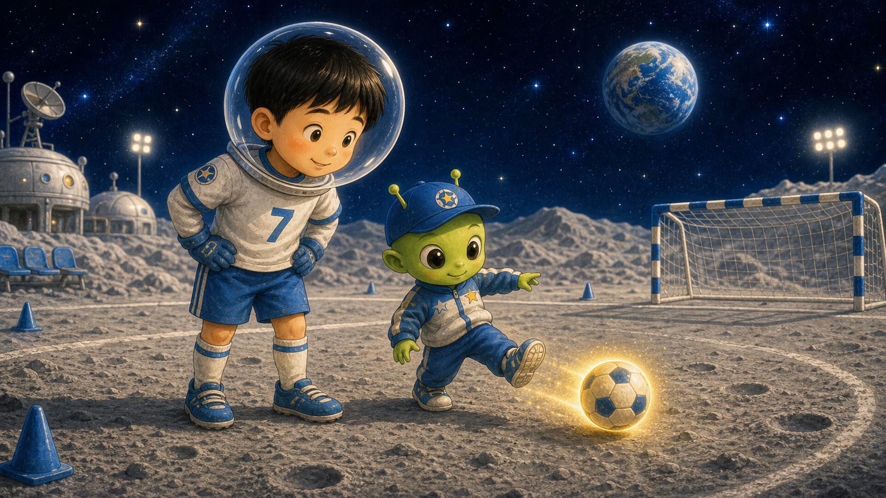
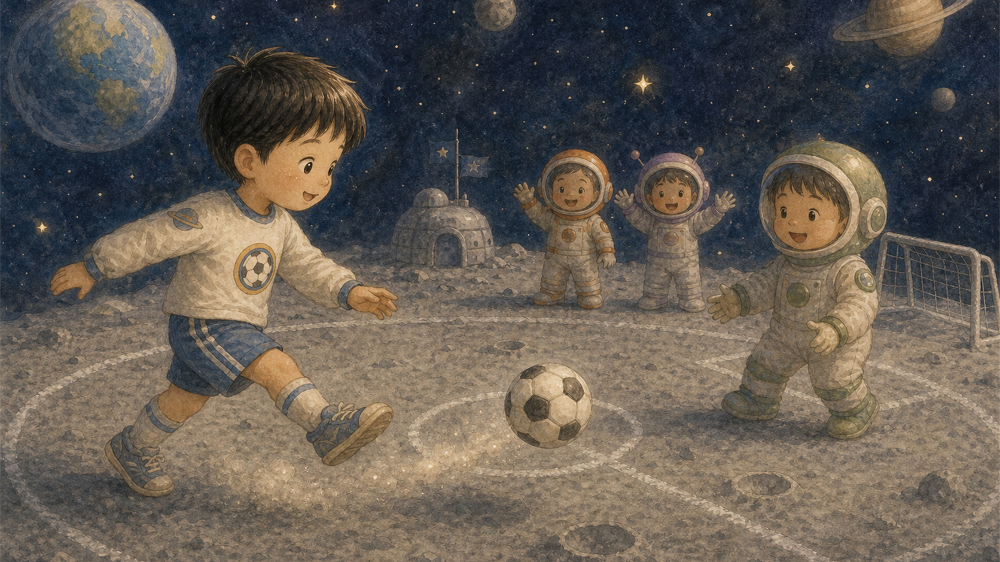
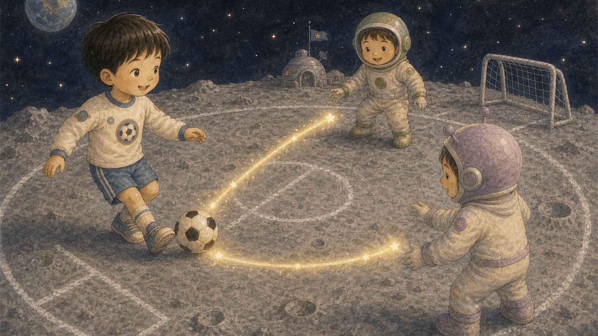
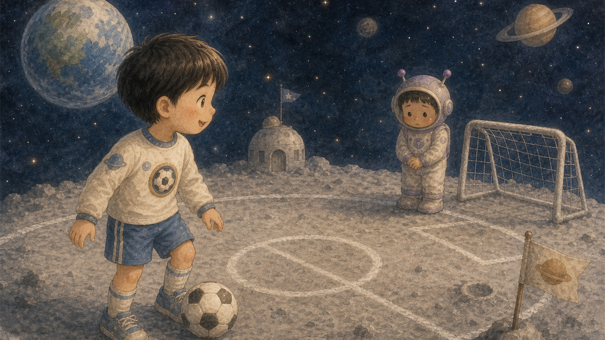
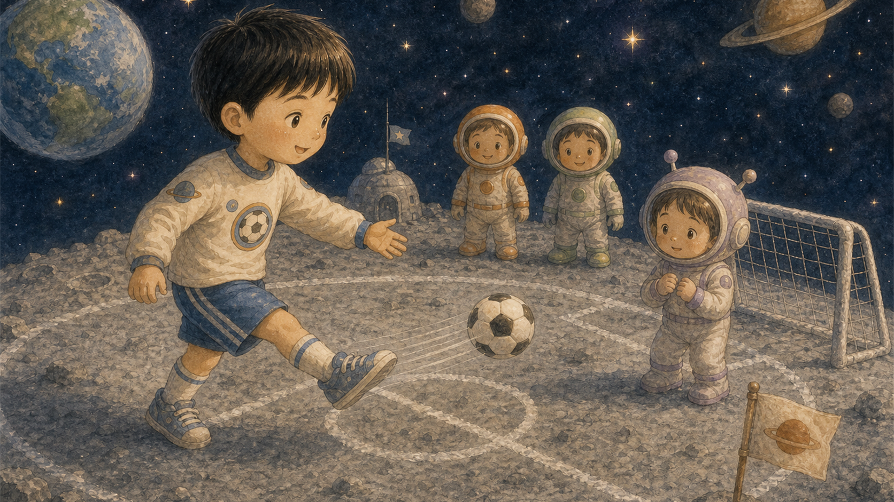
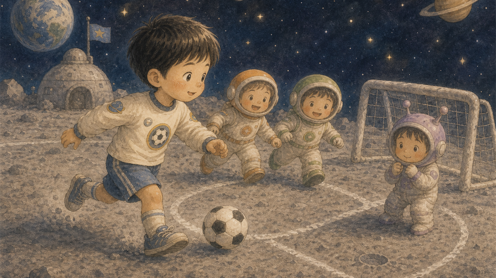
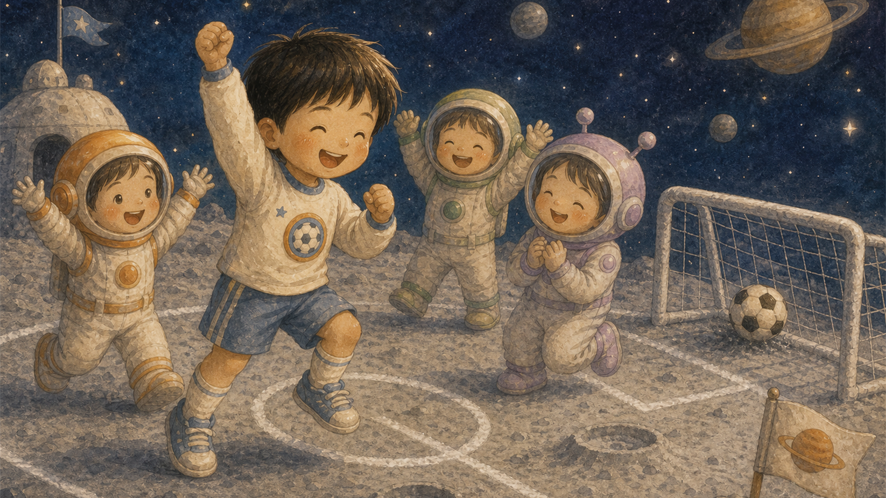
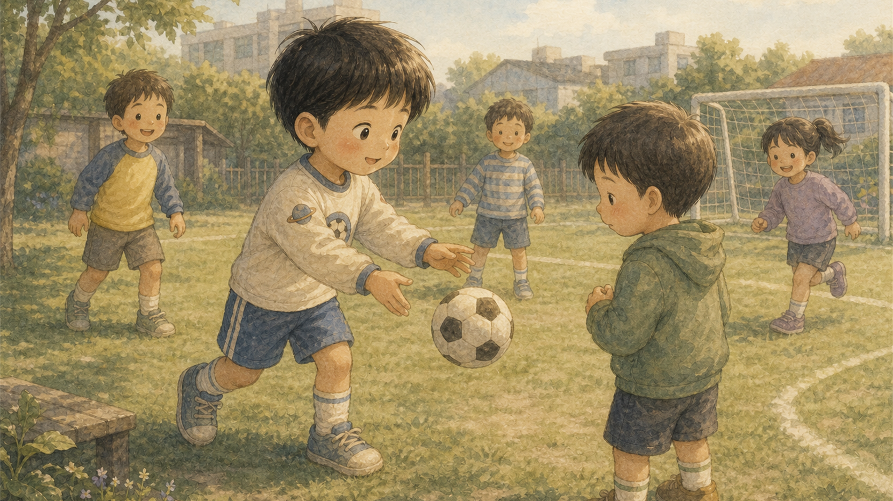

둥실둥실 축구장
태오는 축구공을 안고 잠들었어요. 꿈속에서 눈을 뜨자 발밑은 폭신한 달 모래였지요.
달나라 친구들이 손을 흔들며 태오를 맞이했어요.

태오는 축구공을 안고 잠들었어요. 꿈속에서 눈을 뜨자 발밑은 폭신한 달 모래였지요.
달나라 친구들이 손을 흔들며 태오를 맞이했어요.

태오가 힘껏 찬 공은 골대보다 훨씬 높이 떠올랐어요. 달에서는 살짝 차도 공이 멀리 날아갔거든요.
태오는 웃으며 다시 해 보기로 했어요.

작은 외계 코치가 태오에게 부드러운 발끝 슛을 알려 주었어요. 공은 천천히 빛나며 앞으로 굴러갔지요.
새로운 곳에서는 새로운 방법이 필요했어요.

태오는 혼자 달리지 않고 옆 친구에게 공을 보냈어요. 친구는 환하게 웃으며 다시 태오에게 패스했답니다.
공이 오가자 마음도 가까워졌어요.

태오와 친구들은 삼각형으로 서서 공을 주고받았어요. 공은 별빛 꼬리를 남기며 둥실둥실 움직였지요.
골보다 친구를 보는 눈이 더 중요했어요.

태오는 달 운동장 끝에 혼자 서 있는 친구를 보았어요. 그 친구는 공이 올까 봐 조금 긴장한 얼굴이었지요.
태오는 손짓으로 함께하자고 불렀어요.

태오는 아주 천천히 공을 찼어요. 수줍은 친구는 공을 받아 살짝 차 보았고, 얼굴에 미소가 피어났답니다.
친구를 기다려 주는 것도 멋진 플레이였어요.

모두가 힘을 합치자 공은 골대 앞으로 천천히 굴러갔어요. 태오는 마지막 슛 대신 옆 친구를 바라보았지요.
이번 골은 모두가 함께 만든 골이었어요.

친구가 찬 공은 반짝이며 골대 안으로 들어갔어요. 태오와 달나라 친구들은 둥실둥실 뛰어올랐답니다.
함께 넣은 골이라 더 크게 기뻤어요.

아침에 깬 태오는 축구공을 꼭 안고 있었어요. 그날 운동장에서 태오는 친구에게 먼저 패스했지요.
달나라에서 배운 함께하는 마음이 태오의 진짜 실력이 되었어요.